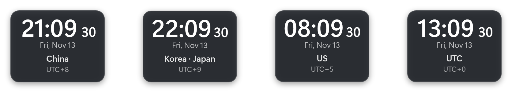
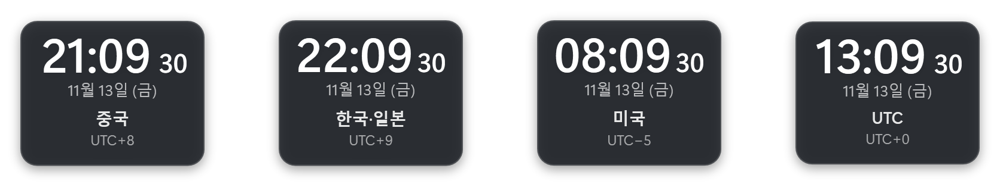
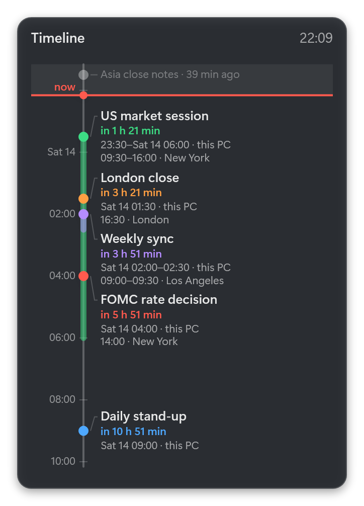
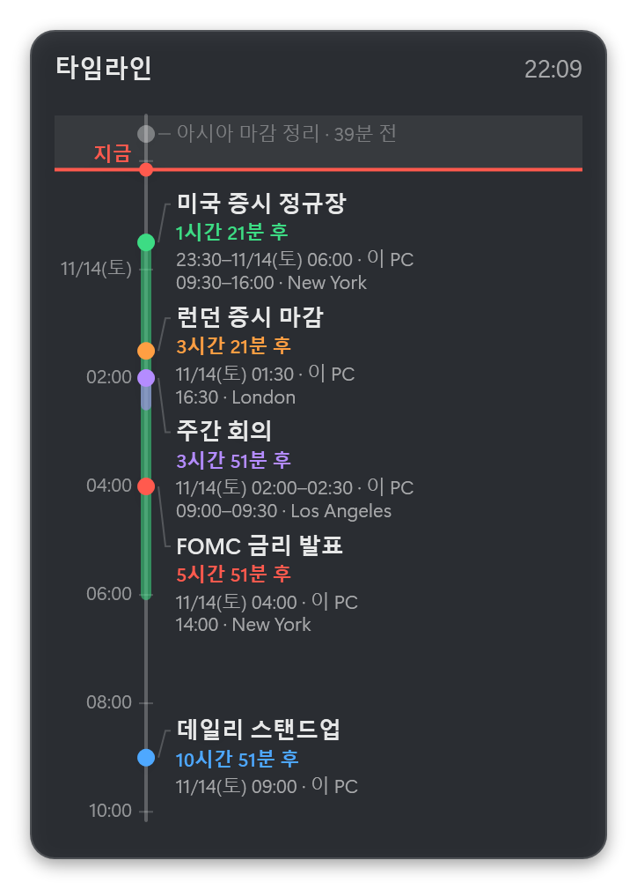
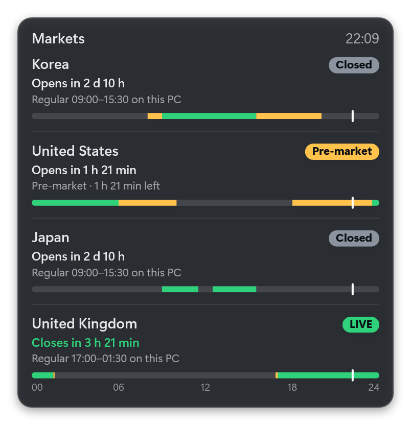
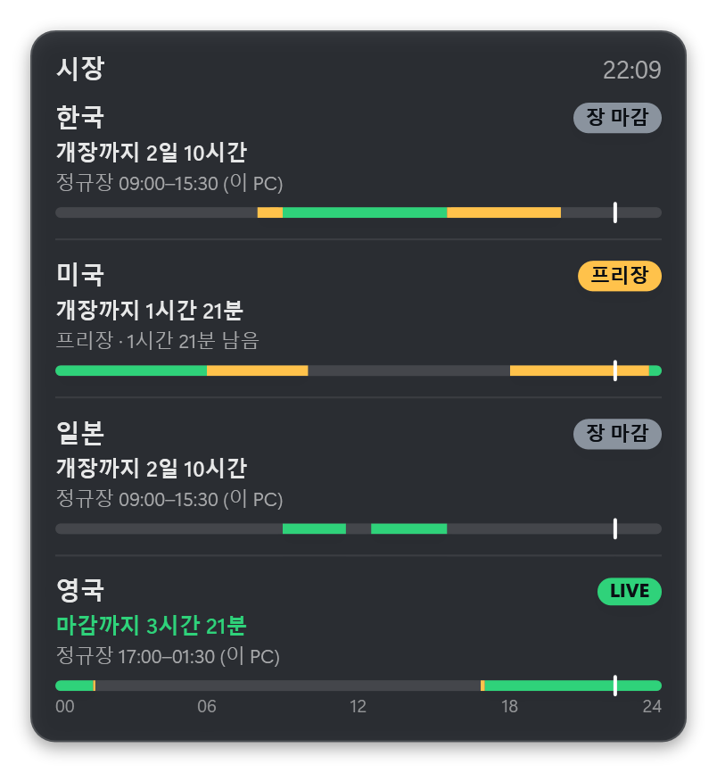
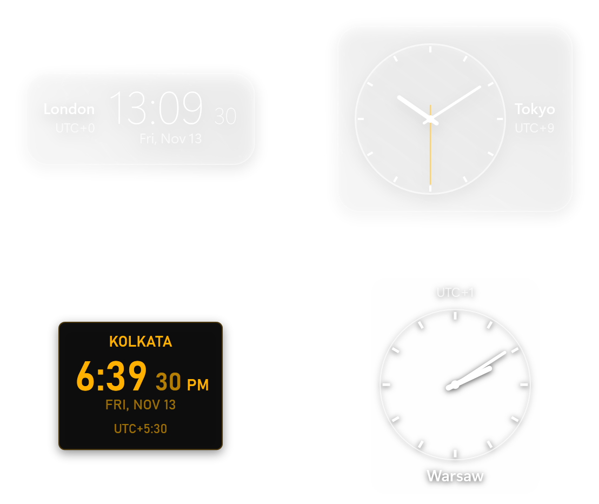
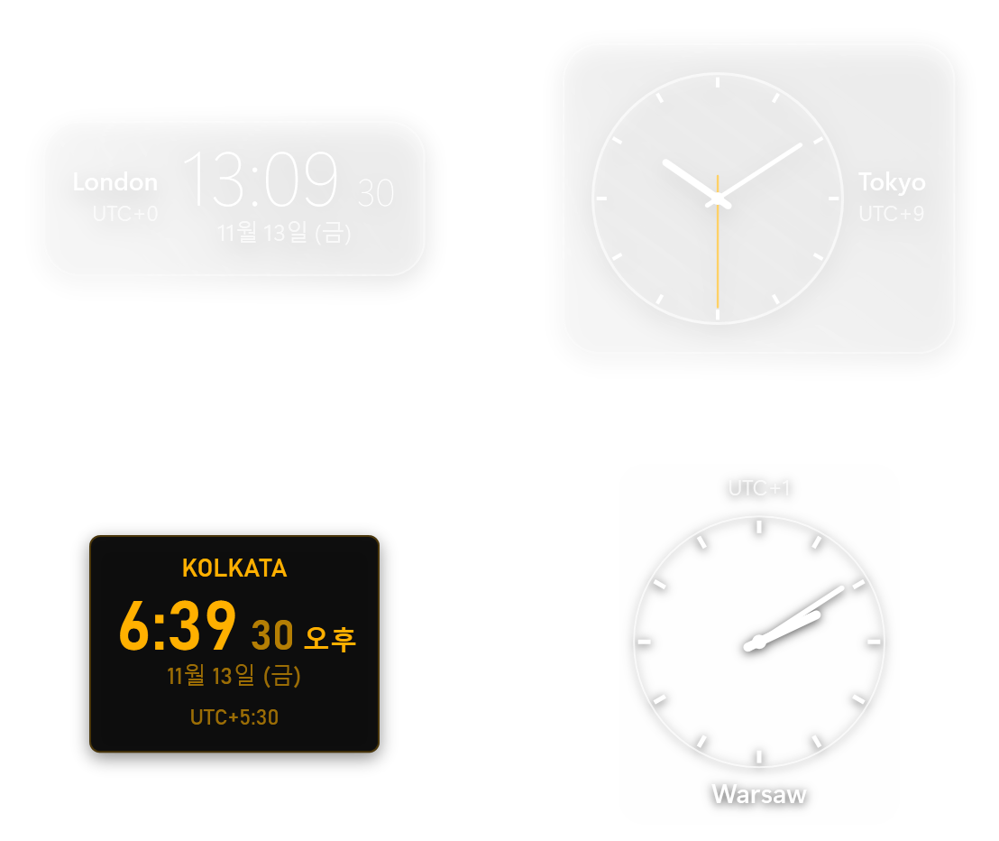
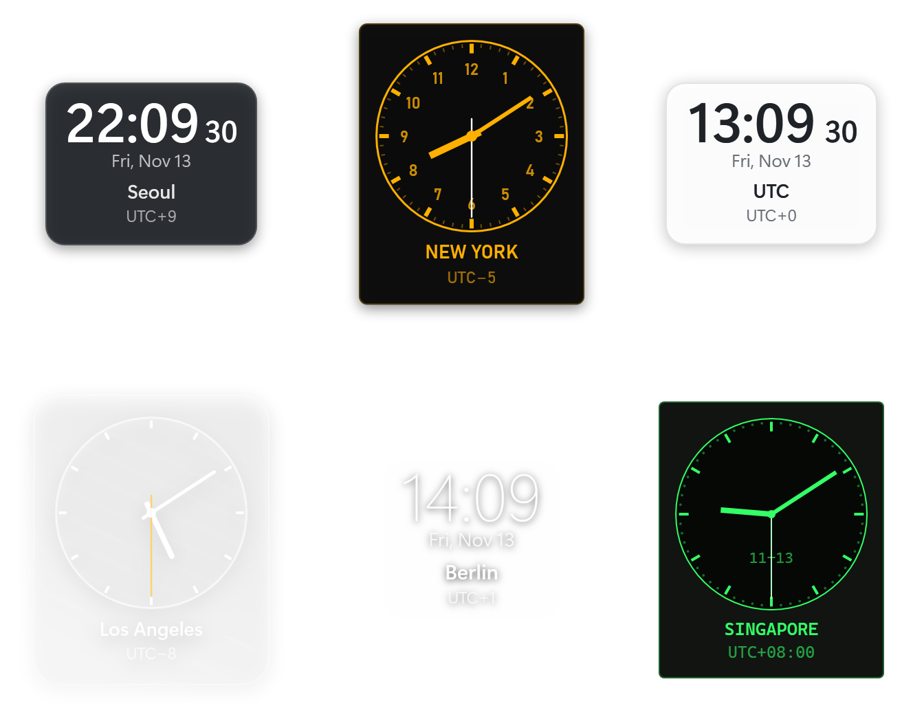

Every time zone you need,
right on your desktop.
필요한 시간대를
바탕 화면 위에 그대로.
Zoneline puts small, good-looking clocks on your Windows desktop, one per time zone, with a timeline of what is coming up and the live status of major stock markets. Style every pixel with themes. Zoneline은 Windows 바탕 화면에 시간대마다 작고 깔끔한 시계를 띄우고, 다가올 일정을 타임라인으로, 주요 증시의 장 상태를 실시간으로 보여 줍니다. 모양은 테마로 끝까지 바꿀 수 있습니다.
One-time purchase (US$0.99 in the US). Windows 10 (2004) or later, Windows 11. 한 번 구매(미국 기준 0.99달러). Windows 10(2004) 이상, Windows 11.


World time, your day, and the markets세계 시간, 나의 하루, 그리고 시장
Each clock is its own little window. Drag it anywhere, right-click it for options, Ctrl + mouse wheel to resize. 시계 하나가 작은 창 하나입니다. 끌어서 옮기고, 오른쪽 클릭으로 옵션을 열고, Ctrl + 마우스 휠로 크기를 바꿉니다.
Any time zone모든 시간대
Every time zone Windows knows, searchable by city, country or offset. Daylight saving time is handled for you. Windows가 아는 모든 시간대를 도시, 나라, 오프셋으로 검색해 고릅니다. 서머타임도 알아서 반영합니다.
Timeline gadget타임라인 가젯
Every reminder lined up on your own clock: a little of the past, a lot of what is coming, with countdowns. Pick 3 hours to 7 days ahead, or your own range. 모든 알림을 내 PC 시각 기준으로 줄 세웁니다. 지난 시간은 조금, 다가올 시간은 넉넉히, 남은 시간과 함께. 앞으로 3시간부터 7일까지 고르거나 직접 정합니다.
Reminders in any time zone시간대 기준 알림
Set "09:30 in New York", once or every weekday, as a moment or a range. It keeps New York time through daylight saving and notifies you when it starts. "뉴욕 09:30"처럼 정합니다. 한 번이나 평일마다, 한순간이나 기간으로. 서머타임이 바뀌어도 뉴욕 시각을 지키고, 시작할 때 알려 줍니다.
Market hours, live시장 시간, 실시간
Korea (KRX, NXT), US, Japan, Hong Kong, China, UK and Germany: LIVE, pre-market, after-hours, lunch, closed or holiday, with "opens in 1 h 21 min" on your own clock. Published holidays, early closes and daylight saving are handled. 한국(KRX, NXT), 미국, 일본, 홍콩, 중국, 영국, 독일: 장 중(LIVE), 프리장, 애프터장, 점심 휴장, 마감, 휴장일을 "개장까지 1시간 21분"과 함께 내 PC 시각으로 보여 줍니다. 거래소가 공지한 휴장일과 조기 마감, 서머타임도 반영합니다.
Digital or analog디지털 또는 아날로그
Per clock. 12 or 24 hours, seconds on or off, date above or below. 시계마다 따로 고릅니다. 12/24시간제, 초 표시, 날짜 위치까지.
Labels on any side라벨은 원하는 쪽에
Put the region name and the UTC offset (UTC+9, UTC−5…) above, below, left or right of each clock, or hide them. 지역명과 UTC 표기(UTC+9, UTC−5…)를 시계마다 위, 아래, 왼쪽, 오른쪽에 붙이거나 숨깁니다.
Always on top, any opacity항상 위, 불투명도 조절
Keep a clock above your other windows, and fade it from 100% down to 20% so it never gets in the way. 다른 창 위에 고정하고, 불투명도를 100%에서 20%까지 낮춰 거슬리지 않게 둘 수 있습니다.
Fully themeable테마로 전부 바꾸기
Six built-in themes. Make your own from the template: colours, gradients, fonts, images, hands and ticks. Changes show up the moment you save. 기본 테마 6종. 템플릿으로 나만의 테마를 만들 수 있습니다. 색, 그라데이션, 글꼴, 이미지, 바늘, 눈금까지. 저장하는 순간 반영됩니다.
Finance preset금융 프리셋
One click opens China, Korea · Japan, US (New York, where Nasdaq opens) and UTC side by side. 클릭 한 번으로 중국, 한국·일본, 미국(나스닥이 열리는 뉴욕 시각), UTC를 나란히 띄웁니다.


Your day, across time zones시간대를 넘나드는 나의 하루
Set a reminder on any city's clock: a call at 09:00 in San Francisco, a meeting at 16:30 in London. The timeline lines them all up on your own clock, a little of the past and more of what is coming, with a countdown to each. 알림은 그 도시의 시각으로 겁니다. 샌프란시스코 09:00 통화, 런던 16:30 회의처럼. 타임라인은 이 모두를 내 PC 시각으로 줄 세워, 지난 일정은 짧게, 다가올 일정은 넉넉히, 남은 시간과 함께 보여 줍니다.
Every market, on your clock모든 장을 내 시계로
Is New York open yet? How long until Seoul's after-market ends? The market panel answers at a glance, with holidays, early closes, NXT and pre-market sessions, and daylight-saving switches announced two weeks ahead. 미장 열렸나? 애프터마켓 언제 끝나지? 시장 가젯이 한눈에 답합니다. 휴장일, 조기 마감, NXT와 프리장, 그리고 서머타임 변경을 2주 전부터 알려 줍니다.


Place the labels where they fit라벨은 어울리는 자리에
A tall column of clocks reads best with names on the left; a row reads best with names underneath. Each clock decides for itself. 세로로 쌓은 시계는 이름이 왼쪽에, 가로로 늘어선 시계는 아래에 있을 때 잘 읽힙니다. 시계마다 따로 정합니다.



Make it yours내 취향대로
A theme is a folder with one theme.json file, plus any images and fonts you want. The template lists every setting with its default, so you start by changing a value, not by reading a manual.
테마는 theme.json 파일 하나와 원하는 이미지, 글꼴을 담은 폴더입니다. 템플릿에 모든 설정이 기본값과 함께 적혀 있어서, 설명서를 읽기보다 값을 바꾸는 것으로 시작하면 됩니다.
Collects nothing.수집 없음
No account, no ads, no analytics. Time zones come from Windows; settings and reminders stay on your PC. The only download is a public market-hours file, and you can turn it off. 계정, 광고, 분석 도구가 없습니다. 시간대 정보는 Windows에서 가져오고, 설정과 알림은 내 PC에만 있습니다. 내려받는 것은 공개 장 시간 파일 하나뿐이고, 끌 수 있습니다. Privacy policy개인정보 처리방침